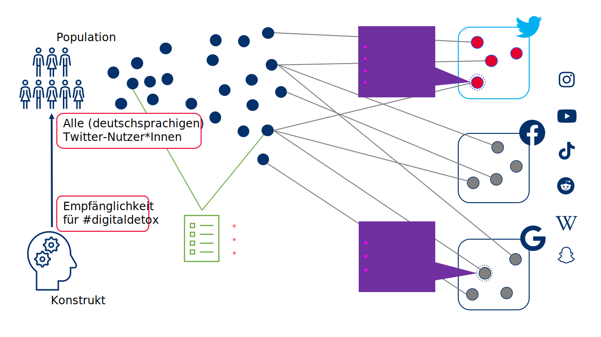

| Gruppe | Thema | Studierende |
|---|---|---|
| A | üìö Digital disconnection | Kofer, Rieger |
| B | üì¶ Automatic text analysis (Topic Modeling & Netzwerkanalyse) | K√∂bler, M√ºhlmeister, Neudecker |
| C | üìö Media routines & habits | Budak, Knapp, Kuck |
| D | üì¶ Data collections methods (mit Schwerpunkt Data Donations) | Jakob, Neumeier |
Einführung & Überblick
Session 02
08.11.2023
Abstimmung des Semesterplans
 Option A Option A |
|||
| Session | Datum | Topic | Presenter |
|---|---|---|---|
Introduction |
|||
1 |
25.10.2023 |
Kick-Off |
Christoph Adrian |
01.11.2023 |
üéÉ Holiday (No Lecture) |
||
2 |
08.11.2023 |
Einführung in DBD |
Christoph Adrian |
3 |
15.11.2023 |
üî® Working with R |
Christoph Adrian |
üìÇ Project 1 |
Analysis of media content |
||
4 |
22.11.2023 |
üìö Digital disconnection |
Group A |
5 |
29.11.2023 |
üì¶ Automatic text analysis |
Group B |
6 |
06.12.2023 |
üî® Text as data in R |
Christoph Adrian |
7 |
13.12.2023 |
üìä Presentation & Discussion |
All groups |
8 |
20.12.2023 |
Buffer Session |
|
üéÑChristmas Break (No Lecture) |
|||
üìÇ Project 2 |
Analysis of media usage |
||
9 |
10.01.2024 |
üìö Media routines & habits |
Group C |
10 |
17.01.2024 |
üì¶ Data collection methods |
Group D |
11 |
24.01.2024 |
üî® Working data logs |
Christoph Adrian |
12 |
31.01.2024 |
üìä Presentation & Discussion |
All groups |
13 |
07.02.2024 |
üèÅ Recap, Evaluation & Discussion |
Christoph Adrian |
 Option B Option B |
|||
| Session | Datum | Topic | Presenter |
|---|---|---|---|
Introduction |
|||
1 |
25.10.2023 |
Kick-Off |
Christoph Adrian |
01.11.2023 |
üéÉ Holiday (No Lecture) |
||
2 |
08.11.2023 |
Einführung in DBD |
Christoph Adrian |
3 |
15.11.2023 |
üî® Working with R |
Christoph Adrian |
üó£Ô∏è |
Presentations |
||
4 |
22.11.2023 |
üìö Media routines & habits |
Group C |
5 |
29.11.2023 |
üìö Digital disconnection |
Group A |
6 |
06.12.2023 |
üì¶ Data collection methods |
Group D |
7 |
13.12.2023 |
üì¶ Automatic text analysis |
Group B |
8 |
20.12.2023 |
Buffer Session |
|
üéÑChristmas Break (No Lecture) |
|||
üìÇ Project |
Analysis of media content |
||
9 |
10.01.2024 |
üî® Text as data |
Christoph Adrian |
10 |
17.01.2024 |
üî® Topic Modeling |
Christoph Adrian |
11 |
24.01.2024 |
üî® Q&A |
Christoph Adrian |
12 |
31.01.2024 |
üìä Presentation & Discussion |
All groups |
13 |
07.02.2024 |
üèÅ Recap, Evaluation & Discussion |
Christoph Adrian |
Was ist das eigentlich?
Rückblick auf einen Definitionversuch von Weller (2021)
… fasst eine Vielzahl von möglichen Datenquellen zusammen, die verschiedene Arten von Aktivitäten aufzeichnen (häufig sogar “nur” als Nebenprodukt)
… können dabei helfen, Meinungen, Verhalten und Merkmale der menschlichen Nutzung digitaler Technologien zu erkennen

Und im Kontext des Seminars?
Arbeitsdefinition & Kernbereiche (GESIS) von DBD
- DBD umfasst digitale Beobachtungen menschlichen und algorithmischen Verhaltens,
- wie sie z.B. von Online-Plattformen (wie Google, Facebook oder dem World Wide Web) oder
- Sensoren (wie Smartphones, RFID-Sensoren, Satelliten oder Street View-Kameras) erfasst werden.

Mehr Daten durch technologischen Fortschritt
Beispiel: Wachsenden Anzahl eingebauter Smartphone-Sensoren

Graphik aus Struminskaya et al. (2020)
Die Power von Social Sensing
Forschungsdesign zur Erhebung digitaler Verhaltensdaten (Flöck & Sen, 2022)


Mit Fokus auf die Platform
Forschungsdesign zur Erhebung digitaler Verhaltensdaten (Flöck & Sen, 2022)


Literatur
Anderson, C. (2008). The end of theory: The data deluge makes the scientific method obsolete. Wired. https://www.wired.com/2008/06/pb-theory/
Baeza-Yates, R. A. (2013). Big data or right data.
Barocas, S., Crawford, K., Shapiro, A., & Wallach, H. (2017). The problem with bias: From allocative to representational harms in machine learning. Special interest group for computing. Information and Society (SIGCIS), 2.
Barocas, S., & Selbst, A. D. (2016). Big Data’s Disparate Impact. SSRN Electronic Journal. https://doi.org/10.2139/ssrn.2477899
boyd, danah m., & Crawford, K. (2012). Critical questions for big data: Provocations for a cultural, technological, and scholarly phenomenon. Information, Communication & Society, 15(5), 662–679. https://doi.org/10.1080/1369118X.2012.678878
boyd, danah m., & Ellison, N. B. (2007). Social Network Sites: Definition, History, and Scholarship. Journal of Computer-Mediated Communication, 13(1), 210–230. https://doi.org/10.1111/j.1083-6101.2007.00393.x
Burnett, S., & Feamster, N. (2014). Encore: Lightweight measurement of web censorship with cross-origin requests. https://doi.org/10.48550/ARXIV.1410.1211
Croskerry, P. (2002). Achieving Quality in Clinical Decision Making: Cognitive Strategies and Detection of Bias. Academic Emergency Medicine, 9(11), 1184–1204. https://doi.org/10.1197/aemj.9.11.1184
Davidson, B. I., Wischerath, D., Racek, D., Parry, D. A., Godwin, E., Hinds, J., Linden, D. van der, Roscoe, J. F., Ayravainen, L. E. M., & Cork, A. (2023). Platform-controlled social media APIs threaten open science. http://dx.doi.org/10.31234/osf.io/ps32z
Flöck, F., & Sen, I. (2022). Digital traces of human behaviour in online platforms research design and error sources. https://www.gesis.org/fileadmin/user_upload/MeettheExperts/GESIS_Meet_the_experts_Digitaltraces_humanbehaviour.pdf
Friedman, B., & Nissenbaum, H. (1996). Bias in computer systems. ACM Transactions on Information Systems, 14(3), 330–347. https://doi.org/10.1145/230538.230561
Goroff, D. L. (2015). Balancing privacy versus accuracy in research protocols. Science, 347(6221), 479–480. https://doi.org/10.1126/science.aaa3483
Harford, T. (2014). Big data: A big mistake? Significance, 11(5), 14–19. https://doi.org/10.1111/j.1740-9713.2014.00778.x
Keusch, F., & Kreuter, F. (2021). Digital trace data. In Handbook of Computational Social Science, Volume 1 (1st ed., pp. 100–118). Routledge. https://doi.org/10.4324/9781003024583-8
Kramer, A. D. I., Guillory, J. E., & Hancock, J. T. (2014). Experimental evidence of massive-scale emotional contagion through social networks. Proceedings of the National Academy of Sciences, 111(24), 8788–8790. https://doi.org/10.1073/pnas.1320040111
Lazer, D. M. J., Pentland, A., Watts, D. J., Aral, S., Athey, S., Contractor, N., Freelon, D., Gonzalez-Bailon, S., King, G., Margetts, H., Nelson, A., Salganik, M. J., Strohmaier, M., Vespignani, A., & Wagner, C. (2020). Computational social science: Obstacles and opportunities. Science, 369(6507), 1060–1062. https://doi.org/10.1126/science.aaz8170
Olteanu, A., Castillo, C., Diaz, F., & Kıcıman, E. (2019). Social data: Biases, methodological pitfalls, and ethical boundaries. Frontiers in Big Data, 2, 13. https://doi.org/10.3389/fdata.2019.00013
Salganik, M. J. (2018). Bit by bit: Social research in the digital age. Princeton University Press.
Struminskaya, B., Lugtig, P., Keusch, F., & Höhne, J. K. (2020). Augmenting Surveys With Data From Sensors and Apps: Opportunities and Challenges. Social Science Computer Review, 089443932097995. https://doi.org/10.1177/0894439320979951
Sweeney, L. (2013). Discrimination in Online Ad Delivery: Google ads, black names and white names, racial discrimination, and click advertising. Queue, 11(3), 10–29. https://doi.org/10.1145/2460276.2460278
Ulloa, R. (2021). Introduction to online data acquisition. https://www.gesis.org/fileadmin/user_upload/MeettheExperts/GESIS_Meettheexperts_Introductioncss.pdf
Weller, K. (2021). A short introduction to computational social science and digital behavioral data. https://www.gesis.org/fileadmin/user_upload/MeettheExperts/GESIS_Meettheexperts_Introductioncss.pdf
Zimmer, M. (2010). “But the data is already public”: on the ethics of research in Facebook. Ethics and Information Technology, 12(4), 313–325. https://doi.org/10.1007/s10676-010-9227-5